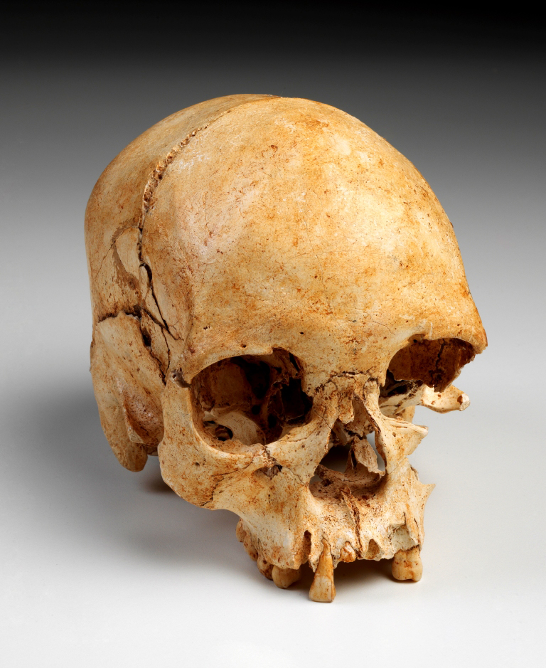

Um incêndio de grandes proporções atinge, desde a noite de domingo (2), o prédio do Museu Nacional, na Quinta da Boa Vista, na zona norte do Rio de Janeiro. Os bombeiros chegaram por volta das 20h30 ao local. De acordo com a assessoria de imprensa do Corpo de Bombeiros do Rio de Janeiro, a maior parte do acervo foi atingida.
Segundo a corporação, uma pequena parte das obras foi retirada antes de ser atingida pelo fogo. Não foi dito quais são essas peças nem para onde elas foram transportadas.

A operação de combate às chamas foi feita pelo batalhão de São Cristóvão com o apoio de mais onze quartéis da região. Segundo o comandante dos Bombeiros, Roberto Robadey, hidrantes estavam sem pressão no início da operação, o que prejudicou o combate. Então eles usaram bombas para sugar a água de um lago do entorno do museu. "Agora temos a garantia de que não faltará mais água", afirmou.
A operação de combate às chamas foi feita pelo batalhão de São Cristóvão com o apoio de mais onze quartéis da região. Segundo o comandante dos Bombeiros, Roberto Robadey, hidrantes estavam sem pressão no início da operação, o que prejudicou o combate. Então eles usaram bombas para sugar a água de um lago do entorno do museu. "Agora temos a garantia de que não faltará mais água", afirmou.
Quando o incêndio começou, o Museu Nacional já estava fechado para visitação do público. Quatro vigilantes estavam no edifício, perceberam o fogo, fugiram e chamaram os bombeiros. Testemunhas que estavam no parque que há próximo ao local disseram que o fogo começou no primeiro andar, mas ainda não há informações sobre as causas do incêndio.
Dezenas de funcionários da UFRJ (Universidade Federal do Rio de Janeiro) acompanham o incêndio. Dois andares foram bastante destruídos e parte do teto desabou.
Entre os funcionários que, em prantos, acompanhavam o incêncio estava o bibliotecário Edson Vargas da Silva, de 61 anos, que trabalha há 43 anos no museu. "Tem muito papel, o assoalho de madeira, muita coisa que queima muito rápido. Uma tragédia. Minha vida toda estava aí dentro", afirmou.
Uma parte do acervo não fica nesse prédio, então está preservado. O Zoológico do Rio de Janeiro fica bem próximo do Museu Nacional, mas não foi atingido.
O Museu Nacional é vinculado à UFRJ e completou 200 anos em 2018. Seu acervo tem mais de 20 milhões de itens.
O prédio onde hoje funciona o Museu Nacional/UFRJ foi uma doação do comerciante Elias Antônio Lopes ao príncipe regente D.João, em 1808, ano da chegada da família real ao Rio.
Especializado em história natural, é o mais antigo centro de ciência do Brasil e o maior museu desse tipo na América Latina.
O maior tesouro do Museu Nacional é o esqueleto mais antigo já encontrado nas Américas, com cerca de 12 mil anos de idade. Achado em Lagoa Santa, em Minas Gerais, em 1974, trata-se de Luzia, uma mulher que morreu entre os 20 e os 25 anos de idade e foi uma das primeiras habitantes do Brasil.
